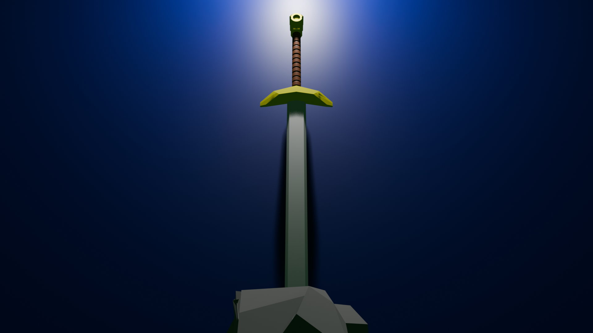

3D Digital Space
This project is a 3D scene of a sword stuck in a stone. I used different shapes, colors, lighting, and camera angles to create the scene. The image shows a magical and mysterious moment, like something from a fantasy story.
